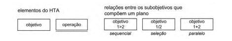
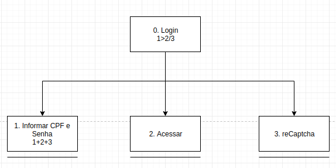
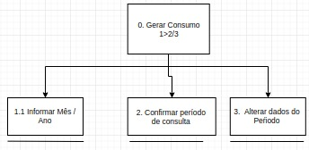

Análise de tarefas
1.Introdução
Uma análise de tarefas é utilizada para se ter um entendimento sobre qual é o trabalho dos usuários, como eles o realizam e por quê realizam.Nesse tipo de análise, o trabalho é definido em termos dos objetivos que os usuários querem ou precisam atingir.
A análise de tarefas pode ser utilizada nas três atividades habituais:- análise da situação atual (apoiada ou não por um sistema computacional),
- (re)design de um sistema computacional
- avaliação do resultado de uma intervenção que inclua a introdução de um (novo) sistema computacional.
2.Análise Hierárquica de Tarefas (HTA)
Ajuda a relacionar o que as pessoas fazem (ou se recomenda que façam), por que o fazem, e quais as consequências caso não o façam corretamente. Ela se baseia em psicologia funcional, e não comportamental, como eram as abordagens da época em que foi criada.

- Objetivo: Um objetivo é um estado específico de coisas, um estado final.Podendo ser definido por um ou mais eventos ou por valores fisicamente observáveis de uma ou mais variáveis, que atuam como critério de alcance do objetivo , em última instância, do desempenho do sistema.
- Operação: Uma operação é especificada pelas circunstâncias nas quais o objetivo é ativado (input ou entrada), pelas atividades ou ações (actions) que contribuem para atingi-lo e pelas condições que indicam o seu atingimento (feedback).
HTA1: Cadastro de Usuário

HTA2: Login

HTA3: Gerar consumo

Referências Bibliográficas
Barbosa, S.;Silva, B. Interação Humano Computador, Capítulo 6 Organização no espaço de problema.
Histórico de versões
| Data | Versão | Descrição | Autor(es) |
|---|---|---|---|
| 05/10/19 | 1.0 | Criação do documento | Matheus Estanislau e Moacir Mascarenha |
| 05/10/19 | 1.1 | Adição do documento no repositório | Matheus Estanislau e Moacir Mascarenha |